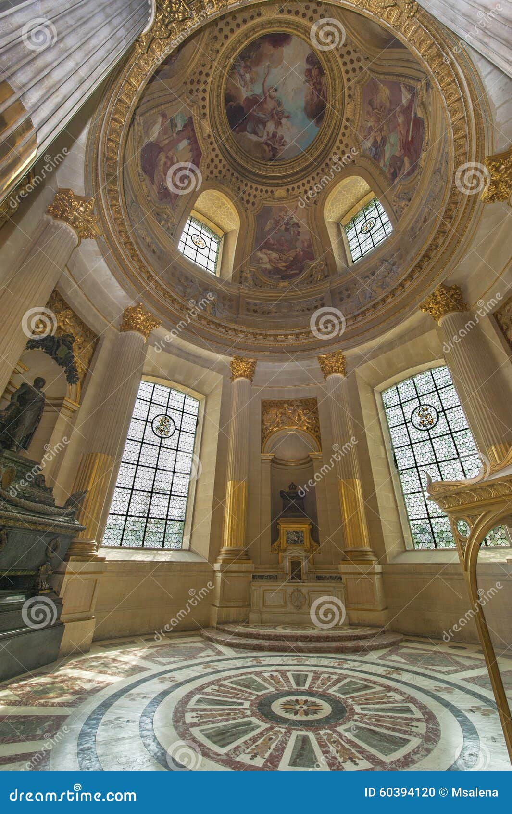
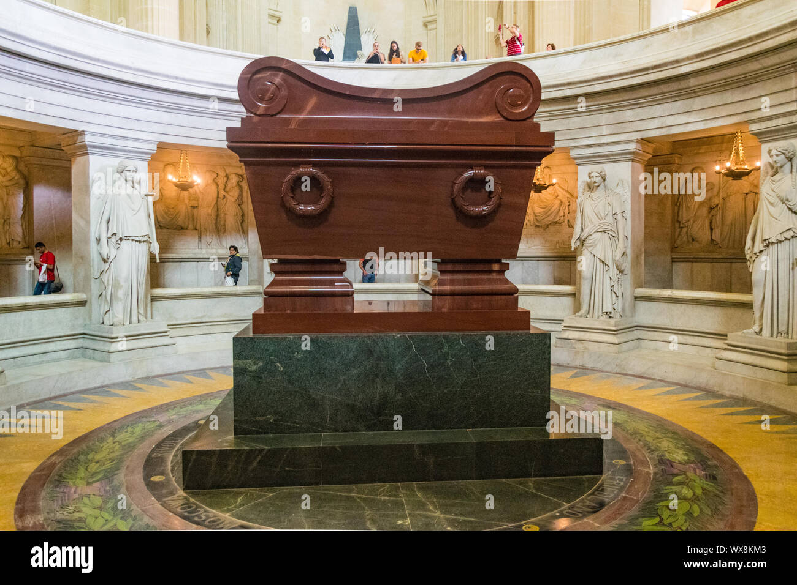

🌟 Bienvenidos al castillo de los valientes 🌟
¡Chicos y chicas, preparaos! Aquí comienza una nueva aventura por uno de los lugares más sorprendentes de París: el Palacio de Los Inválidos 🏰. Desde lejos ya se ve su cúpula dorada brillando como si fuera el sombrero de un rey mágico 👑. Este lugar está lleno de misterios, armaduras antiguas, espadas largas como dragones... ¡y hasta un emperador dormido!
⏳ Un poco de historia mágica ⏳
En 1670, el rey Luis XIV, también conocido como el Rey Sol 🌞, decidió construir este enorme edificio para que los soldados mayores y heridos tuvieran un sitio donde vivir. Era como una gran casa de héroes donde podían descansar y contar sus batallitas mientras comían croissants 🥐. Desde entonces, Los Inválidos ha sido un lugar muy importante para Francia.
Hoy, este "palacio-hospital" es además un museo gigante que guarda espadas, cascos, cañones, pinturas de guerra, uniformes... ¡y hasta esqueletos de caballos que participaron en batallas legendarias! 🐎💥
⚔️ ¡La tumba de Napoleón! 😮
¿Conocéis a Napoleón Bonaparte? Fue un general y emperador muy famoso de Francia que conquistó medio continente. ¡Tenía solo 1,68 m pero una ambición de gigante! 😄 Pues bien, su tumba está justo bajo la cúpula dorada, rodeada de mármol rojo y estatuas enormes. Parece que estuviera en un templo sagrado de superhéroes antiguos.
🧭 Misiones para jóvenes aventureros 🧭
- Explorador de tesoros: Busca el escudo más antiguo y adivina de qué país era.
- Mini historiador: Encuentra una armadura con rayones. ¿Será de un caballero que luchó contra dragones?
- Agente secreto: Recorre las salas del museo en silencio y descubre una espada tan larga que no cabe en la mochila 🧪🕵️.
🏰 Lugares especiales para descubrir 🏰
- La Cour d'Honneur (Patio de los Héroes): Aquí se hacen desfiles militares y los cañones saludan al cielo. Perfecto para correr en zigzag sin perder de vista la cúpula.
- El Musée de l’Armée: Con salas desde la Edad Media hasta las guerras modernas. Cascos vikingos, espadas samurái, cañones de verdad... ¡parece el castillo de los Vengadores de la historia!
- La capilla: Con vitrales preciosos y la tumba de Napoleón justo al centro. Habla bajito, que aquí se siente la historia 💫
📸 Momentos que no puedes perderte 📸
Antes de irte, haz una foto delante de la cúpula como si estuvieras coronado como emperador o emperatriz. Si puedes, levanta una baguette como si fuera una espada — ¡París te declarará noble viajero/a de la historia! 🥖✨
🎨 Idea divertida para después
Cuando llegues al hotel o a casa, dibuja tu propia armadura de batalla mágica: ¿tendrá rayos? ¿alas? ¿escudos de pasteles? ¡Todo vale si lo imaginaste en Los Inválidos!
📣 Curiosidad final:
Durante la Segunda Guerra Mundial, este museo estuvo protegido como si fuera un tesoro nacional. Y lo sigue siendo. Porque en cada rincón hay una historia que espera a ser contada... ¡o dibujada!


📅 Día especial: Sábado 5 de julio de 2025
- ⏰ Apertura del complejo: 10:00 h
- 🕍 Museo del Ejército y exposiciones: 10:00 h – 18:00 h (última entrada a las 17:30 h)
- ⛪ Cúpula y tumba de Napoleón: 10:00 h – 18:00 h
- 🌿 Jardines y patios: Acceso libre durante el horario de apertura
🎟️ Consejillo útil:
¡Reserva tus entradas con antelación si puedes! Los sábados de verano suelen estar muy concurridos, y así evitarás colas largas bajo el sol ☀️. Además, si llegas temprano, tendrás más tiempo para explorar sin prisas.
🍪 Bonus para peques:
Justo enfrente del complejo hay zonas verdes perfectas para merendar después de la visita. ¡Ideal para recargar energía con zumo y galletas mágicas!